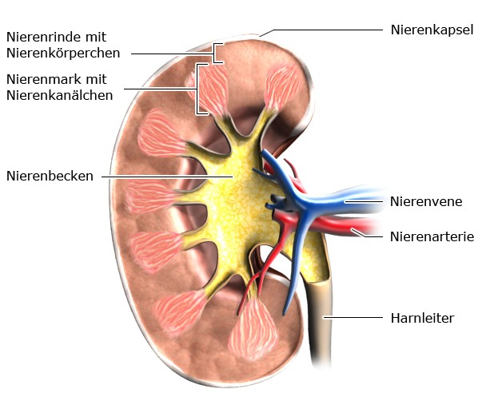

Nieren
Die menschlichen Nieren sind wichtig für die Regelung des Flüssigkeits- und Elektrolythaushalts, des Blutdrucks, des Säure- und Basenhaushalts, für die Entgiftung des Körpers, die Bildung roter Blutkörperchen und die Regelung des Knochenstoffwechsels.
Anatomie der Nieren
Die Nieren sind zwei paarig angelegte Organe, die sich neben der Wirbelsäule auf Höhe der unteren Rippen befinden. Jede Niere ist, je nach Körpergröße des Menschen, etwa 9 bis 12 cm lang, etwa 4 bis 6 cm breit und etwa 3 bis knapp 5 cm dick. Eine einzelne Niere wiegt ca. 150 Gramm. Ihre Oberfläche ist meist glatt und die Organe sind sehr gut durchblutet.
Wie sind die Nieren aufgebaut?
Jede Niere ist von drei Hüllen aus Fett oder Bindegewebe umgeben, der sogenannten Nierenkapsel. Diese Hüllen halten die Niere stabil, schützen sie vor äußeren Verletzungen und verankern sie im umliegenden Gewebe. Das Nierengewebe lässt sich in zwei Bereiche einteilen: Die äußere Schicht ist die Nierenrinde. Hier befinden sich etwa 2,4 Millionen Nierenkörperchen, in denen der Urin entsteht. Im Inneren der Niere liegt das Nierenmark. Darin verlaufen Blutgefäße und gewundene Nierenkanälchen, durch die der Urin über das Nierenbecken in den Harnleiter und zur Harnblase gelangt.
Welche Aufgaben haben die Nieren?
Die Nieren sind die Klärwerke des Körpers: Sie produzieren den Urin und scheiden damit Abfallstoffe wie den Harnstoff aus, die im Körper entstehen oder über die Nahrung aufgenommen wurden. Harnstoff entsteht beim Abbau von Eiweißen. Außerdem kann der Körper über den Urin Medikamente, Drogen oder Gifte entsorgen. Neben der Urinproduktion haben die Nieren noch andere wichtige Aufgaben: Sie regulieren den Flüssigkeitshaushalt, indem sie entweder Wasser zurückhalten oder vermehrt mit dem Urin ausscheiden. Wenn sie Wasser zurückhalten, gelangt mehr Flüssigkeit in die Blutgefäße. Dadurch nimmt die Blutmenge zu und der Blutdruck steigt. Scheiden die Nieren mehr Wasser aus, nimmt die Blutmenge ab und der Blutdruck sinkt. Außerdem bilden bestimmte Zellen in den Nieren das Eiweiß Renin. Es besitzt eine hormonähnliche Wirkung, die den Blutdruck ansteigen lässt. Daneben stellen die Nieren die beiden wichtigen Hormone Erythropoetin und Calcitriol her. Erythropoetin fördert die Bildung von roten Blutkörperchen. Calcitriol ist die aktive Form von Vitamin D und reguliert unter anderem die Kalziummenge im Körper. Die Nieren halten auch den sogenannten Säure-Basen-Haushalt im Gleichgewicht. Sie sorgen also dafür, dass das Blut nicht zu sauer und nicht zu basisch wird. Auch der Energiestoffwechsel wird durch die Nieren beeinflusst: Befindet sich zu wenig Zucker (Glukose) im Blut, kann die Niere selbst Zucker herstellen und an das Blut abgeben. Auf jeder Niere befindet sich – wie eine kleine Mütze – eine pyramidenförmige Drüse: die Nebenniere. Die Nebennieren bilden verschiedene lebenswichtige Hormone, unter anderem Kortisol. Quellen
Erkrankungen der Niere
Die Hauptfunktion der Nieren ist die Ausscheidung harnpflichtiger Substanzen. Des Weiteren regulieren sie den Säure-Basen- und den Flüssigkeitshaushalt. Verschiedene Ursachen können zu zunehmender Funktionsbeeinträchtigung der Nieren führen. Dazu zählen v.a. langjähriger Diabetes mellitus oder Bluthochdruck, die übermäßige Einnahme von bestimmten Schmerzmitteln und entzündliche Nierenerkrankungen. Im Endstadium ist die Nierenfunktion vollständig erloschen. Ohne Behandlung führt dies zum Tod. Als Therapieverfahren zur Lebensrettung kommen die Dialyse (Blutwäsche) oder die Nierentransplantation in Frage. Man unterscheidet die extrakorporale Dialyse sowie die Hämofiltration, bei beiden Techniken wird das Blut durch ein Blutwäschegerät geleitet– in der Regel dreimal wöchentlich für vier bis acht Stunden. Ferner unterscheidet man die Peritonealdialyse, die über das Bauchfell kontinuierlich mit einem Katheter erfolgt, wodurch der Patient mobiler bleibt.
Wikipedia lesen